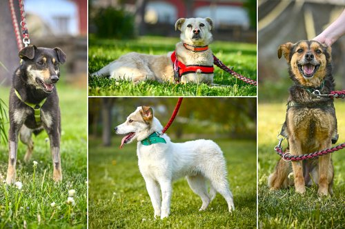

Policejní hlídka Štěpánka podle jeho tvrzení kontrolovala v době, kdy chtěl vůz pouze přeparkovat ze špatně osvětleného místa, kde mu automobil v minulosti několikrát vykradli.
Za jízdu pod vlivem alkoholu dostal pokutu 40.000 korun a na rok přišel o řidičský průkaz. Náměstek opakovaně uvedl, že svého jednání lituje.
Štěpánek původně nechtěl rezignovat. Tvrdil, že skutek se stal v nočních hodinách o víkendu, tedy mimo pracovní dobu, a nemá tak žádnou spojitost s jeho veřejným působením. Navíc měl podporu svých stranických kolegů.
K odchodu ale Štěpánka nejprve vyzval primátor Tomáš Macura (ANO), následně začal sílit i tlak dalších koaličních partnerů, tedy hnutí Ostravak a KDU-ČSL. Štěpánek uvedl, že svým rozhodnutím chce umožnit jednání o pokračování stávající koalice ANO, hnutí Ostravak, KDU-ČSL a ODS.
Dvaašedesátiletý podnikatel Cigánek je třetí volební období zastupitelem v městské části Slezská Ostrava a první volební období zastupitelem města. Po svém zvolení uvedl, že je připraven plně se věnovat funkci náměstka. Pokračovat chce v projektech, které zahájil jeho předchůdce.

Macura na dnešním jednání zastupitelů zopakoval, že Štěpánkovo rozhodnutí hodnotí pozitivně, a svou rezignací tak potvrdil laťku na bezúhonnost členů vedení města, která byla v tomto volebním období stanovena.